Assignment 1
Matthew Lazarus 100962142
Contents
Question 2: Collisions with Mean Free Path (MFP)
In this question, a number of electrons are randomly positioned within a set grid. With the system set to 300K, each electron is assigned velocity components based off of the Gaussian distribution. When an electron hits the top of the grid, it bounces back, and when it hits the side of the grid, it continues its trajectory from the opposite side of the grid. Additionally, there is a probability of scattering at each time step for each electron.
% Clear all previous variables, figures, etc, to ensure that the workspace % is clean. clear all clearvars clearvars -GLOBAL close all %Define constants that may need to be used later in the code. global C C.q_0 = 1.60217653e-19; % electron charge C.hb = 1.054571596e-34; % Dirac constant C.h = C.hb * 2 * pi; % Planck constant C.m_0 = 9.10938215e-31; % electron mass C.kb = 1.3806504e-23; % Boltzmann constant C.eps_0 = 8.854187817e-12; % vacuum permittivity C.mu_0 = 1.2566370614e-6; % vacuum permeability C.c = 299792458; % speed of light C.g = 9.80665; %metres (32.1740 ft) per s² %Thermal Velocity at 300K: vth = sqrt(C.kb*300/(0.26*C.m_0)); %Find Mean Free Path tmn = 0.2*10^-12; freePath = tmn * vth; % Set the number of electrons, time step and total time. Initialize % matrices for the x and y positions, the x and y components of the % velocity, and the temperature of the system. Column 1 of each matrice is % the previous value, while column 2 is the current value. numElectrons=20000; dt = 6e-15; %seconds nTime = 1.2e-11; %Simulation length x = zeros(numElectrons,2); %Position (x) y = zeros(numElectrons, 2); %Position (y) vx = zeros(numElectrons, 2); %Velocity (x) vy = zeros(numElectrons, 2); %Velocity (y) vTotal = zeros(numElectrons, 2); %Velocity temperature = zeros(numElectrons,2); % Define two vectors to keep track of the time and distance since the last % scatter, for each electron. Additionally initalize a counter for them. distanceSinceLastScatter = zeros(numElectrons,1); timeSinceLastScatter = zeros(numElectrons,1); scatterCount = 0;
Now, randomly assign initial positions & velocities. Choose each velocity component based off of the Gaussian distribution. Divide by the square root of 2 as there are 2 degrees of freedom. This is derived from equating the acceleration of the electron to its kinetic energy, as seen by the equation below.
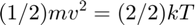
for electronCount = 1:numElectrons x(electronCount,2)=rand()*200e-9; y(electronCount,2)=rand()*100e-9; vx(electronCount,2) = vth * randn()/sqrt(2); vy(electronCount,2) = vth * randn()/sqrt(2); vTotal(electronCount,2)= sqrt(vx(electronCount,2)^2+vy(electronCount,2)^2); end
Histogram
Create a histogram showing the speed distribution of the electrons. As each component was randomly chosen using a Gaussian distribution, the total distribution should resemble a Maxwell-Boltzmann distribution.
figure(3) bins = linspace(0, 5*vth, 100); h = histogram(vTotal(1:electronCount,2),bins); title('Electron Speed Histogram'); xlabel('Electron Speed (m/s)'); ylabel('Count'); %The mean velocity is: meanVel = mean(vTotal(1:electronCount,2));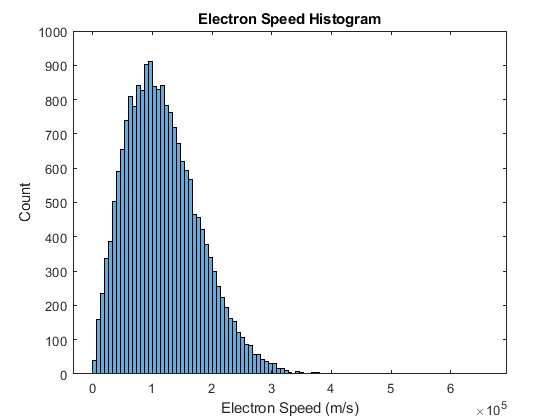
Therefore, the mean velocity of the Maxwell-Boltzmann distribution is 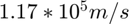, which is slightly lower than the expected value of 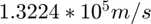. This difference in the values is expected, and is due to the randomness of the assigned velocity components.
% Create a figure for the electron trajectories and the temperature of the % system. figure(1) title('Electron Trajectories') xlabel('X Position (m) ') ylabel('Y Position (m)') axis([0 200e-9 0 100e-9]); figure(2) title('Temperature') xlabel('Time (s)') ylabel('Temperature (K)') axis([0 (nTime) 250 350]); % Define a vector that will indicate whether an electron crosses a horizontal % boundary. As only 5 electrons will be plotted, if the electron cross the % boundary, a 1 will be set in the position of the vector that corresponds % to the number of the electron (1-5). xBreakpoint = zeros(5);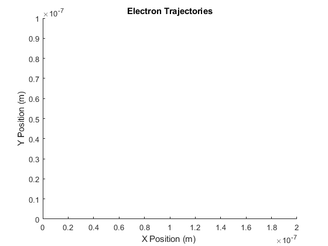 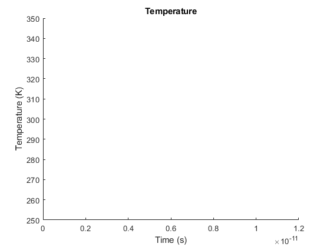
Electron Trajectories and Temperature
The following code is very similar to that used in Question 1. The main difference is the addition of scattering. Using the probability of scattering equation, seen below,the probability of scattering was determined and compared to a random number between 0 and 1. If the number is less than the probability of scattering, the electron will scatter. This means that it will be given new velocity component values, calculated using the Gaussian distribution as was done above. Lastly, the every time the electron scatters, the time and distance since its last scatter is recorded.
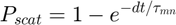
% Run simulation over time. for count = 1:ceil((nTime)/dt) % Run through each electron. for c = 1:numElectrons if(count~=1) % Calculate probability of scattering. Pscat = 1-exp(-dt/tmn); % Update the previous positions and velocities. vx(c,1)=vx(c,2); vy(c,1)=vy(c,2); x(c,1)=x(c,2); y(c,1)=y(c,2); % Update the current position of the electron. x(c,2) = x(c,1) + vx(c, 2)*dt; y(c,2) = y(c,1) + vy(c, 2)*dt; %Update time and distance since the last scatter distanceSinceLastScatter(c)=distanceSinceLastScatter(c)+sqrt((x(c,2)-x(c,1))^2+(y(c,2)-y(c,1))^2); timeSinceLastScatter(c)=timeSinceLastScatter(c)+dt; % Check to see if an electron hit a boundary. If it hit a % horizontal boundary, move it to the other side of the grid % (with the same velocity). If it hit a vertical boundary, it % should bounce off. if(x(c,2)>200e-9) x(c,2) = x(c,2)-200e-9; if(c<6 && c>0) xBreakpoint(c)=1; end elseif(x(c,2)<0) x(c,2)=x(c,2)+200e-9; if(c<6 && c>0) xBreakpoint(c)=1; end end if(y(c,2)>=100e-9) vy(c,2) = -vy(c,2); elseif(y(c,2)<=0) vy(c,2)=-vy(c,2); end r=rand(); %Check if the electron scatters if(Pscat>r) %Scattering occurs. Update velocity components, then save % and clear scattering time and distance. vx(c,2) = vth * randn()/sqrt(2); vy(c,2) = vth * randn()/sqrt(2); scatterCount = scatterCount +1; scatterDistances(scatterCount) = distanceSinceLastScatter(c); scatterTimes(scatterCount)=timeSinceLastScatter(c); distanceSinceLastScatter(c)=0; timeSinceLastScatter(c)=0; end end end if(count>1) % Plot the displacement of the electrons in different colours. figure(1) hold on if(xBreakpoint(1)~=1) plot(x(1,1:2),y(1,1:2),'b') end if(xBreakpoint(2)~=1) plot(x(2,1:2),y(2,1:2),'r') end if(xBreakpoint(3)~=1) plot(x(3,1:2),y(3,1:2),'g') end if(xBreakpoint(4)~=1) plot(x(4,1:2),y(4,1:2),'k') end if(xBreakpoint(5)~=1) plot(x(5,1:2),y(5,1:2),'m') end hold off end % Reset xBreakpoint. xBreakpoint(:)=0; % Update the previous and current temperature values. Plot the change % in temeperature over the step in time. temperature(:,1)=temperature(:,2); temperature(:,2) = (vx(:,2).^2 + vy(:,2).^2).*((0.26*C.m_0))./C.kb; if(count>1) figure(2) hold on plot([(count-1)*dt,count*dt],[mean(temperature(:,1)),mean(temperature(:,2))],'r'); hold off end pause(0.000001) end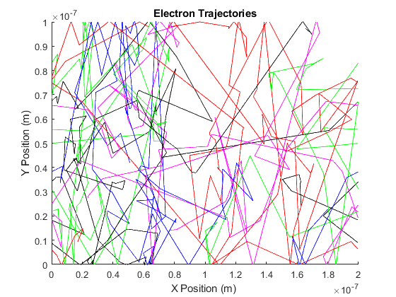 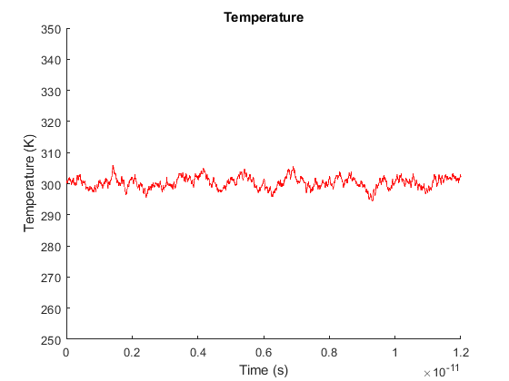
Mean Free Path and Time Between Collisions
The actual Mean Free Path is found by taking the mean of the scattering distances.
actualMFP = mean(scatterDistances);
The actual Mean Free Path is 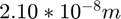, which is very close to the expected value of 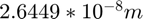.
%The actual time between collisions is found by taking the average of the %time beteen scattering. actualTBC = mean(scatterTimes);
The time between collisions is 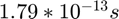, which is close to the expected value of 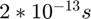.